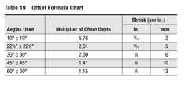
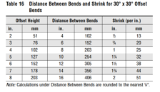
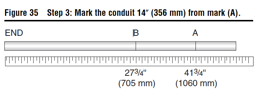
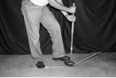
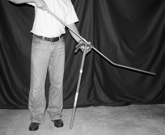
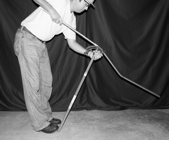
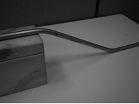

Step 1: Determine the height of the object.
The first task is to determine the size of the object, as it will determine the distance between the marks on the conduit.
Step 2: Determine the proper angle and calculate the distance.
Note: In the video the instructor will direct the student to refer to the UGLY�s bending calculator to determine distance between bends and shrink.
A variety of angles can be used when creating offset bends. It is recommended that you use an angle that is neither too large nor too small. A 45� angle is often too large because it can make pulling the conductors difficult.
A very small angle such as 10� produces an offset bend that requires a lot of room and can be unsightly.
The best angle to use is 30�: This angle is easier for wire pulling, but is also a compact angle that forms a nice fit over the object.
In some situations, however, a 10�, 22 1/2�, 45�, or 60� angle may be a better alternative.
After determining the most appropriate angle, use the offset formula chart below. Using a 7� (178-mm) offset for this example and a 30� angle, you would multiply the offset height by the multiplier to achieve the distance between the two bends.

7� (178 mm) x 2 = 14� (356 mm) between the two marks.
If you had an object with a height of 10� (254 mm) and were using an angle of 22 1/2�, you would calculate the distance as follows:
10� (254 mm) x 2.61 = 26.1� (663 mm)
This example converts to approximately 26 1/8� (664 mm) between the two marks. Typically, it is appropriate to round the decimal numbers to the nearest 1/8� or _�.
Step 3: Make the marks and determine the shrink.
When an offset is bent on a conduit, the conduit will shrink in length due the angles used. In this example, use a 7� (178-mm) offset with 30� angles.
According to Table 19, this choice would produce a shrink of _� (6 mm) per inch of offset height.

7� x _� = 1 _� (44 mm) shrink
Note: In the video the instructor will direct the student to refer to the UGLY�s bending calculator to determine distance between bends and shrink.
In the example, there is a 7� (178-mm) offset bend using 30� angles and there is a shrink of 1 3/4� (44 mm).
Now that the calculations are complete, the conduit is ready to be marked. Suppose that the 7� (178-mm) object is 40� (1016 mm) from the end of the last coupling on the conduit run.
You must account for the shrink, so the first mark (A) on the conduit would be 41 3/4� (1060 mm) from the end of the conduit.
The second mark (B) would be 14� (356 mm) from mark (A), which was calculated in Step 2. Notice that mark (B) is made toward the end where the first measurement was made, which is to the left of the first mark (A)

40� (1016 mm) + 1 _� (44 mm) shrink = 41 _�(1060 mm)
Step 4: Make the first bend.
Now that the conduit is properly marked, you can make the first bend. Place the stub-up arrow on mark (A) and bend the conduit back toward the end mark or coupling end to 30�.
One of the problems encountered when bending offsets is over-bending or under-bending the conduit. It can be somewhat difficult to see if the angle is totally accurate while bending. However, 30� angles are a little easier to determine because the bender handle is 90� to the floor when the 30� point is reached.

Step 5: Make the second bend.
To complete the second bend, leave the conduit in the bender. Pick up the conduit and bender. Turn both upside down, so that the bender handle is placed on the floor.
Slide the bender back to the mark (B) using the stub-up arrow. Rotate the conduit in the bender 180�. Make sure that the conduit is lined up with the bender and that the second bend is made with the conduit rotated 180�. If the conduit is off by more than a couple of degrees, it will produce a crooked offset.

When the conduit is properly aligned, place the end under your armpit and apply pressure to the conduit.
Keep one foot securely placed behind the bender handle to stabilize the bender and keep it from slipping.
Bend the conduit to 30�.

The conduit should fit over the 7�(178-mm) object.
